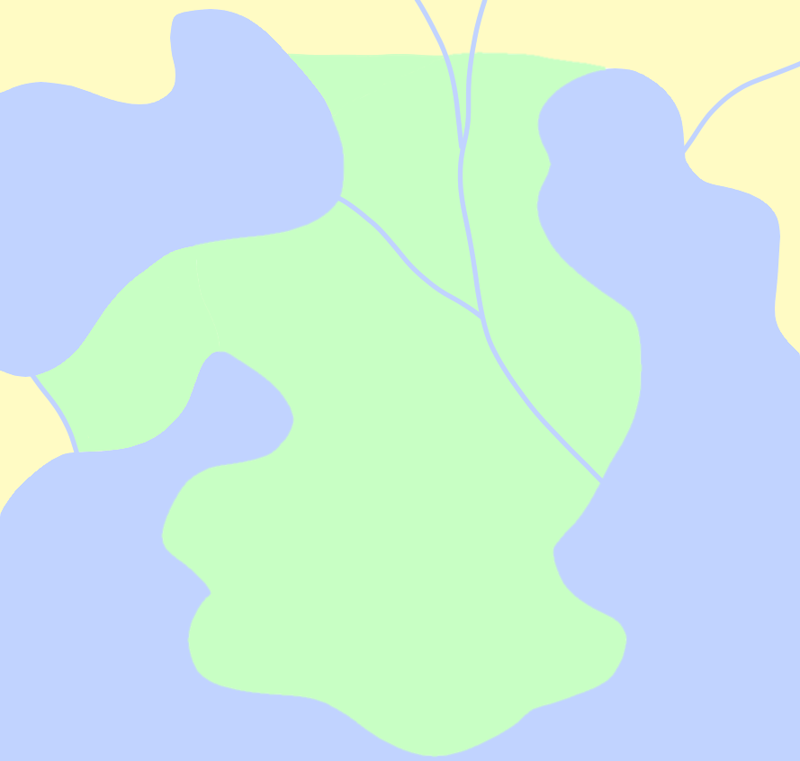
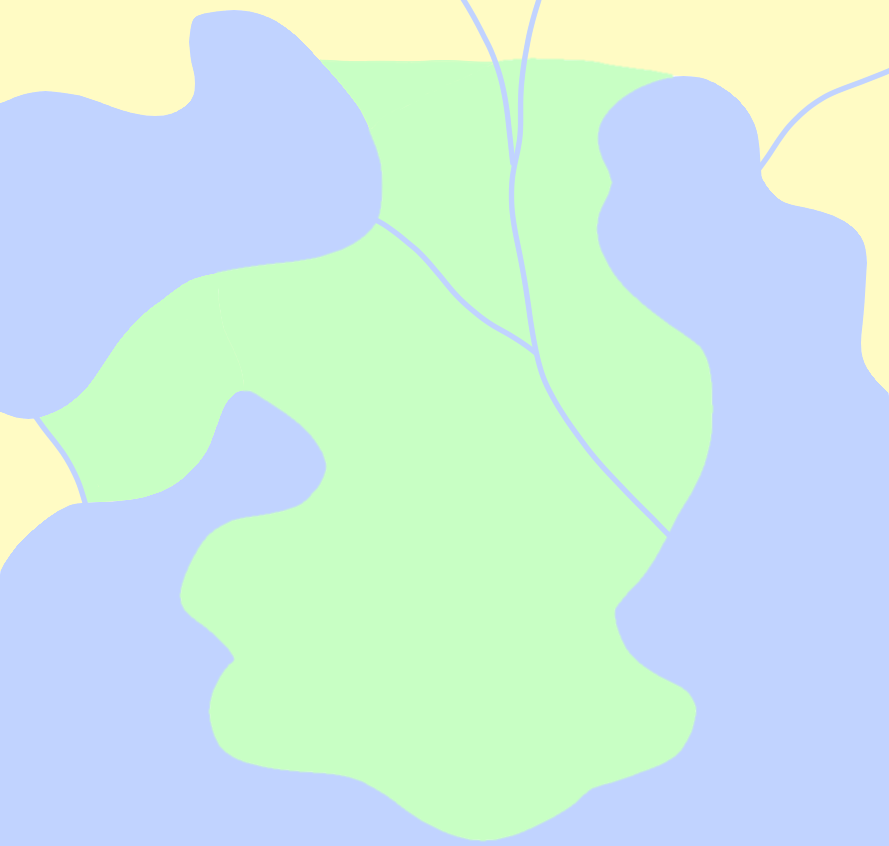

The Lupine
Geographically, the Lupine peninsula is the same as Dayglare. It has historically been arbitrarily separated from the larger landmass because of the regions' differing cultures and histories.
The Lupine enjoys a subtropical climate, with generally hot summers and cool winters. It rains the most during the spring and summer months. Although rarer than in some other regions, snow is not unheard of. Eastern parts of the region tend to be a bit more humid and forested than the drier, rockier western side of the region.
Close